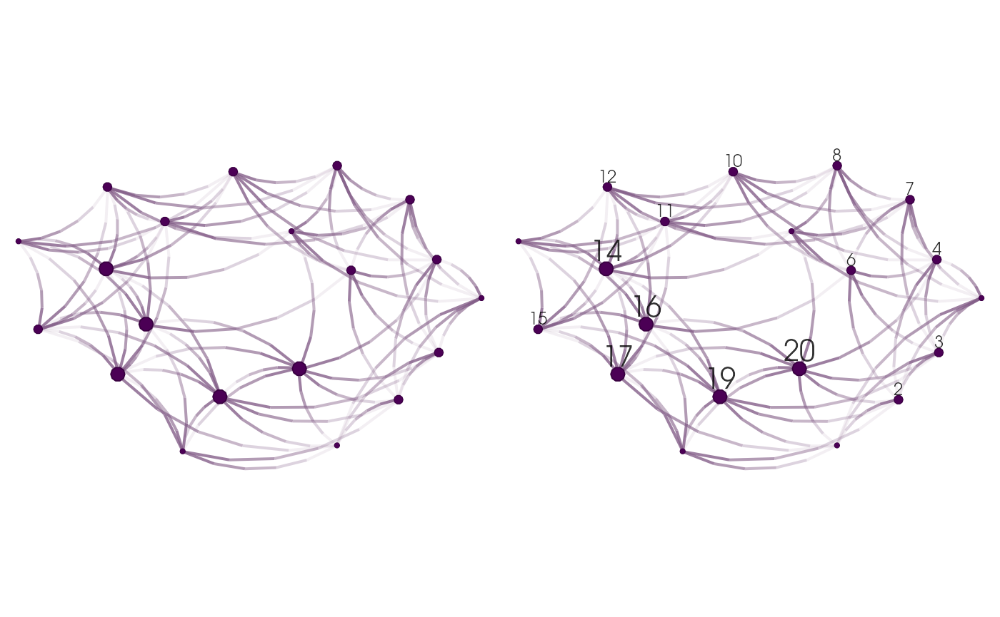

Graph drawing with netplot
George G. Vega Yon
2023-07-25
Source:vignettes/examples.Rmd
examples.RmdSome features:
- Auto-scaling of vertices using sizes relative to the plotting device.
- Embedded edge color mixer.
- True curved edges drawing.
- User-defined edge curvature.
- Nicer vertex frame color.
- Better use of space filling the plotting device.
Introduction
library(netplot)
library(igraph)
library(sna)
library(ggraph)
# We will use the UKfaculty data from the igraphdata package
data("UKfaculty", package = "igraphdata")
# With a fixed layout
set.seed(225)
l_ukf <- layout_with_fr(UKfaculty)Since igraph and statnet do the plotting using base system graphics, we can’t put everything in the same device right away. Fortunately, the gridGraphics R package allows us to reproduce base graphics using the grid system, which, in combination with the function gridExtra::grid.arrange will let us put both base and grid graphics in the same page. First me write a func
# Function to map base to grid
map_base_to_grid <- function(fun) {
gridGraphics::grid.echo(fun)
grid::grid.grab()
}
# Mapping base to grid
ig <- map_base_to_grid(function() plot(UKfaculty, main = "igraph"))
nw <- map_base_to_grid(function() gplot(as.matrix(as_adj(UKfaculty)), coord = l_ukf, main = "sna"))
nplot(UKfaculty, layout = l_ukf, main="netplot")
grid::grid.text("netplot", x = .05, y=.9)
np <- grid::grid.grab()Here is an example with ggraph
ggraph::ggraph(UKfaculty, layout = l_ukf) +
ggraph::geom_edge_arc() +
ggraph::geom_node_point() +
ggplot2::ggtitle("ggraph")
gg <- grid::grid.grab()
# Putting all together
gridExtra::grid.arrange(ig, nw, gg, np, nrow=2, ncol=2)
Comparison of default igraph, sna, ggraph, and netplot default call. nplot fills completely the plotting area, and adjusts vertex size, edge width, and edge arrows’ size accordingly to the plotting area and plotting device.
Multiple plots
To arrange multiple plots in the same page we can use the grid.arrange function from the gridExtra package
x_igraph <- sample_smallworld(1, 20, 4, .05)
x_network <- intergraph::asNetwork(x_igraph)
l <- layout_nicely(x_igraph)
# Putting two plots in the same page (one using igraph and the other network)
gridExtra::grid.arrange(
nplot(x_igraph, layout = l),
nplot(x_network, layout = l), ncol=2, nrow=1
)
Nodes
gridExtra::grid.arrange(
nplot(UKfaculty, layout = l_ukf, vertex.size.range = c(.025, .025)),
nplot(UKfaculty, layout = l_ukf, vertex.size.range = c(.01, .025)),
nplot(UKfaculty, layout = l_ukf, vertex.size.range = c(.01, .025, 4)),
nplot(UKfaculty, layout = l_ukf, vertex.size.range = c(.02, .05, 4)),
ncol=2, nrow=2
)
Modifying vertex.size.range: Each figure shows a different parameter for the vertex size range. From left to right, and top down: (a) Has all vertices with the same scale of 2.5%, (b)

Number of sides for node drawing.
Edges
set.seed(12233)
x <- sample_smallworld(1, size = 10, nei = 2, .1)
l <- layout_with_fr(x)
gridExtra::grid.arrange(
nplot(
x, layout = l,
edge.color = ~ego(mix=0, alpha = .1, col="black") + alter(mix=1),
vertex.size.range = c(.05,.1)
),
nplot(
x, layout = l,
edge.color = ~ego(mix=.5, alpha = .1, col="black") + alter(mix=.5),
vertex.size.range = c(.05,.1)
),
nplot(
x, layout = l,
edge.color = ~ego(mix=1, alpha = .1, col="black") + alter(mix=0),
vertex.size.range = c(.05,.1)
),
ncol=3, nrow=1
)
Modifying edge.color.mix: Each figure shows a different parameter for the edge color mixer. From left to right, (a) colors the edges as alter, (b) mixes ego and alter’s colors, and (c) only uses ego
gridExtra::grid.arrange(
nplot(x, layout = l, edge.curvature = 0, vertex.size.range = c(.05,.1)),
nplot(x, layout = l, edge.curvature = pi/2, vertex.size.range = c(.05,.1)),
nplot(x, layout = l, edge.curvature = pi, vertex.size.range = c(.05,.1)),
ncol = 3, nrow=1
)
Modifying edge.curvature: Each figure shows a different parameter for the edge curvature. From left to right, (a) straight edges, (b) the edge between ego and alter is an arc that measures \(\pi/2\) radians (90 degree), and (c) the edge as an arc between ego and alter that measures \(\pi\) radians (180 degrees).
gridExtra::grid.arrange(
nplot(x, layout = l, edge.line.breaks=3),
nplot(x, layout = l, edge.line.lty = 2, edge.line.breaks=10),
nplot(x, layout = l, edge.line.lty = 3, edge.line.breaks=10),
nplot(x, layout = l, edge.line.lty = 4, edge.line.breaks=10),
nrow=2, ncol=2
)Changing the number of breaks in the edge (arc) and the type of line to be drawn.
Node labels
data(UKfaculty, package = "igraphdata")
# fakenames <- sample